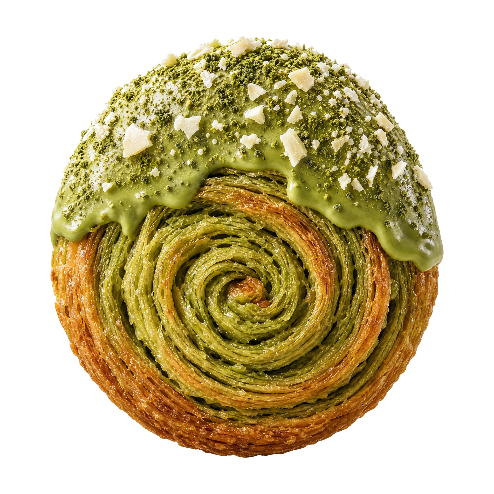
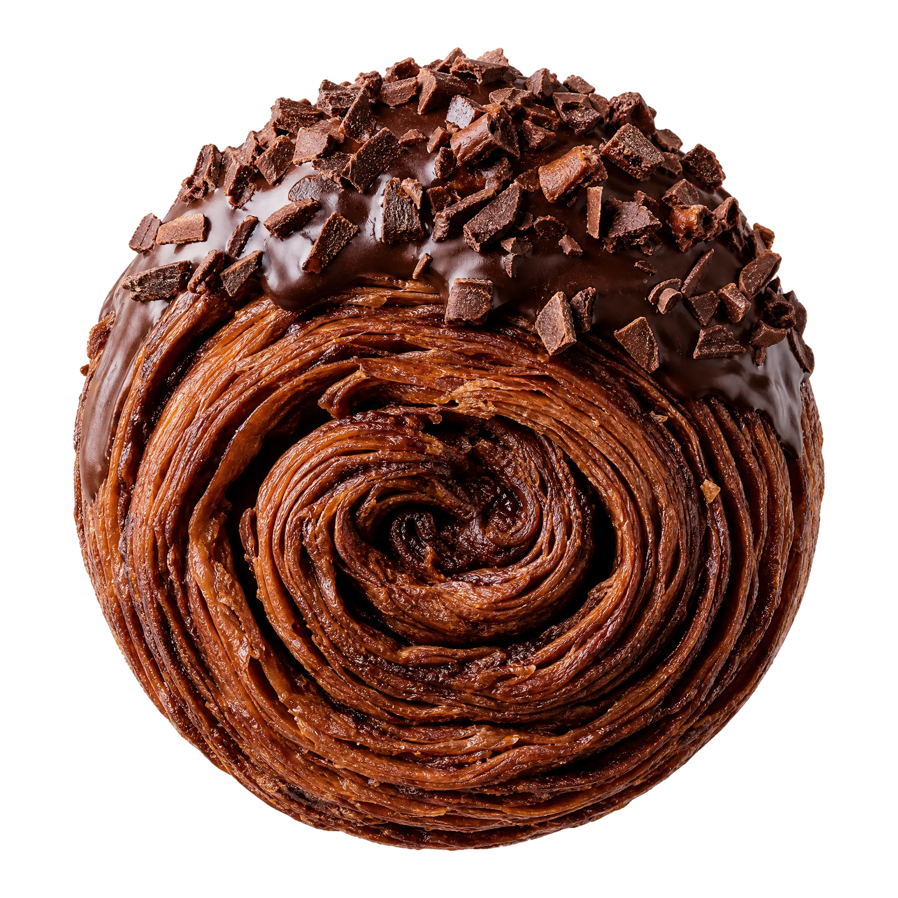
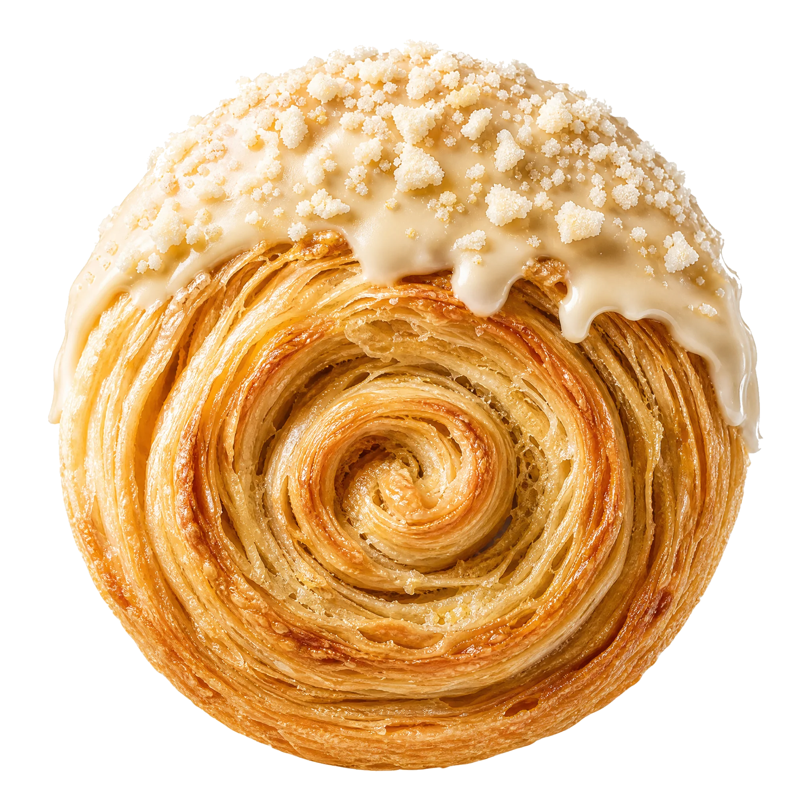
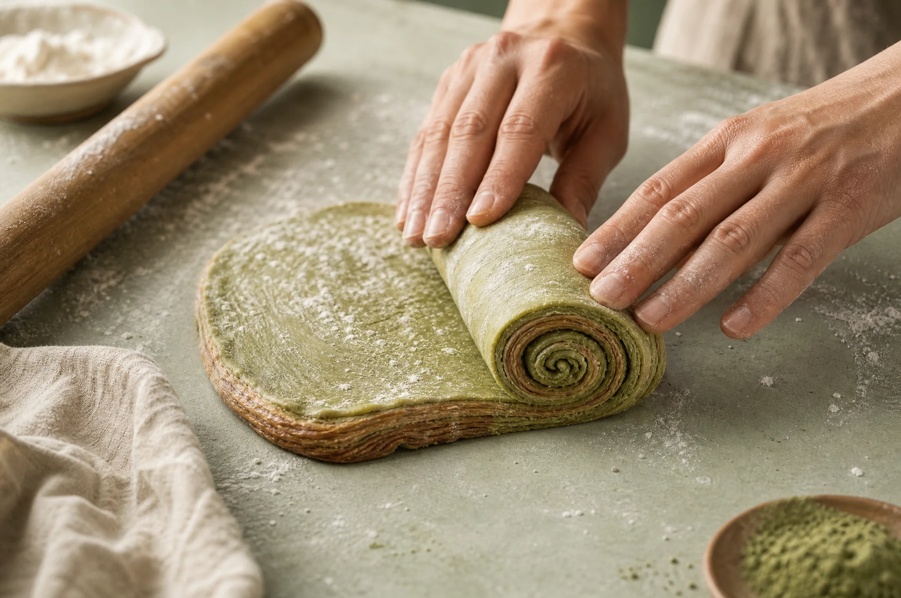
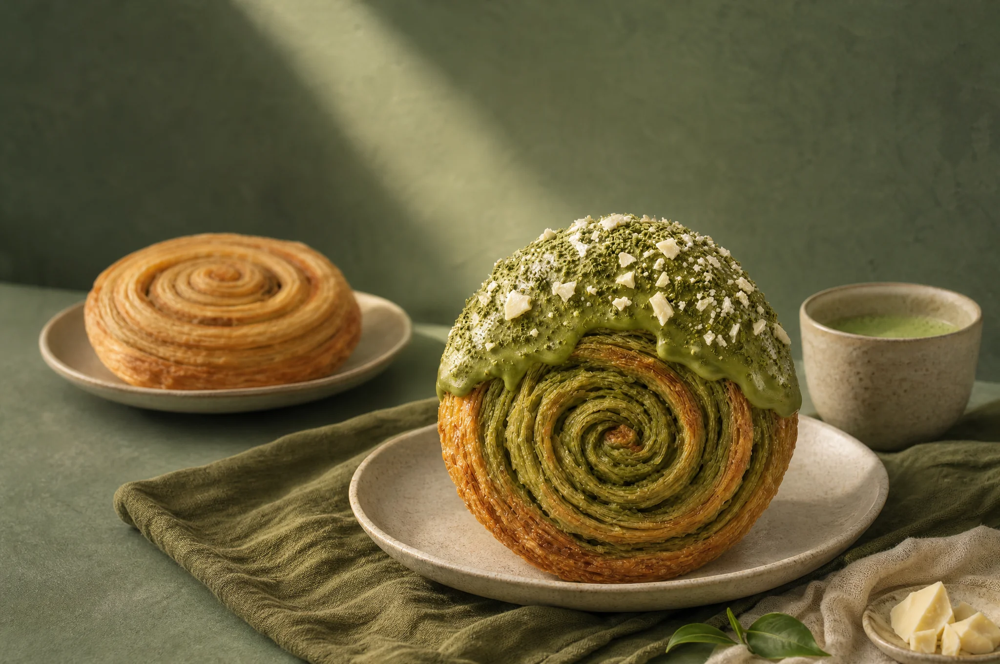
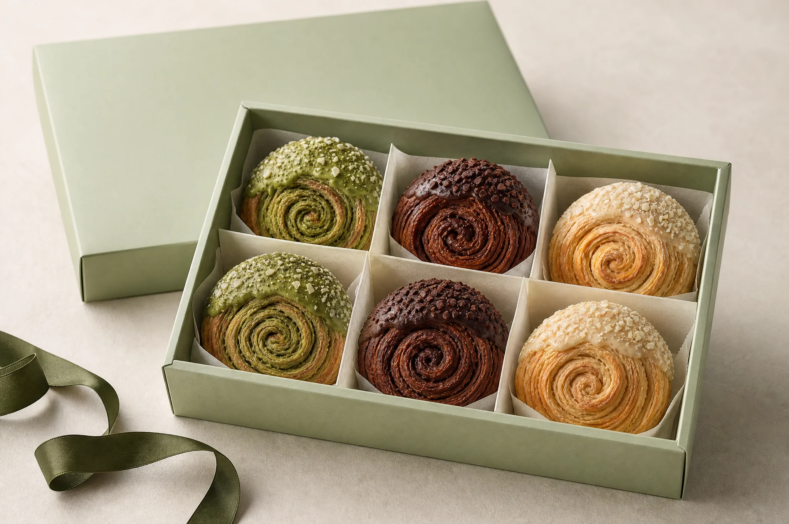

01EL MÁS BOTÁNICO

Beso de matcha
El carácter vegetal del matcha se encuentra con la suavidad del chocolate blanco.
VEGETAL · CREMOSO · DELICADOPASTELERÍA ARTESANA
Crujiente por fuera.
Suave por dentro.
DESLIZA PARA SABOREAR ↓
01 / EL UNIVERSO MIGA
Un primer crujido. Un centro delicado. Un sabor que se queda un poco más.
Así imaginamos la pastelería en MIGA VERDE: pequeños placeres, texturas que sorprenden y tiempo para disfrutarlos. Todo empieza con una espiral.
Encuentra tu beso ↗LA COLECCIÓN
Una misma espiral.
Tres personalidades muy distintas.

El carácter vegetal del matcha se encuentra con la suavidad del chocolate blanco.
VEGETAL · CREMOSO · DELICADO
Chocolate negro, notas tostadas y un final profundo. Para quienes siempre eligen cacao.
TOSTADO · PROFUNDO · ENVOLVENTE
Hojaldre dorado y un glaseado sutil. Ese sabor familiar que apetece volver a descubrir.
CÁLIDO · AROMÁTICO · REDONDO02 / EL SABOR, DE CERCA
El matcha pone la nota vegetal. La cobertura suave y las pequeñas virutas de chocolate blanco encuentran el equilibrio. El hojaldre hace el resto.
Un té suave, una charla larga.

EL ARTE DE VOLVER A LO ESENCIAL03 / NUESTRA MANERA DE MIRAR
No buscamos complicar lo dulce. Nos fascina lo que ocurre entre una capa y la siguiente: la ligereza, el crujido, ese dorado imperfecto.
MIGA VERDE nace de esa idea. Una pastelería imaginada alrededor del hojaldre, los sabores con personalidad y los pequeños rituales cotidianos.
ANATOMÍA DE UN BESO
Una masa laminada que guarda aire entre sus pliegues. Ahí empieza la ligereza.
La espiral reúne las capas en una forma que invita a mirar, partir y descubrir.
El contraste que nos gusta: una superficie crujiente y un interior delicado.
Una cobertura, unas virutas, un toque de sabor. El detalle que lo hace suyo.

EL PEQUEÑO LUJO DE CADA DÍA04 / MEJOR SI SE COMPARTE
Una sobremesa que se alarga, una visita inesperada o un «me acordé de ti». Imagina tu caja con los sabores que más te apetecen.
Colección de muestra. La compra online aún no está disponible.

Hecho paraANTES DEL PRIMER BOCADO
Es nuestra interpretación de una galleta de hojaldre en espiral: capas crujientes, un centro delicado y una cobertura que distingue cada sabor.
Matcha si te gustan las notas vegetales; cacao si buscas intensidad; vainilla si prefieres algo suave y familiar. La caja surtida está pensada para descubrir los tres.
Estas propuestas de hojaldre incluyen ingredientes como trigo, lácteos y chocolate. La ficha definitiva de ingredientes, alérgenos y posibles trazas estará disponible antes de habilitar la venta. No se ofrecen como productos sin gluten o veganos.
Por ahora esta web presenta una marca ficticia y su colección. Puedes explorar los sabores y preparar una selección, pero no se realizan cobros, reservas ni envíos.
Sin prisas y acompañado de tu bebida favorita. Nuestra propuesta: té suave para el matcha, café para el cacao y una infusión floral para la vainilla.
EL FINAL MÁS DULCE